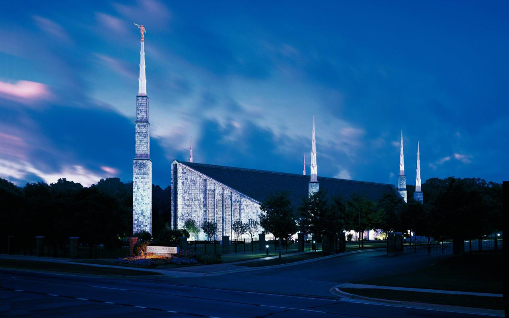

Welcome!

In our website, you will find information about our locations, services, amenities, and the Temples we provide accommodations for. We cater temple workers, patrons, families, members and friends who attend the Temple to serve, or to participate in events such as sealings, weddings, receptions, and youth trips.
Our Locations
We provide services for the following Temple locations:

Manhattan, NY

Chicago, IL
Las Vegas, NV
Los Angeles, CA
Make a reservation!
We have limited accommodations, click here to see our locations and make a reservation.
Contact Us!
We'll be glad to answer any questions! Click here to contact us.